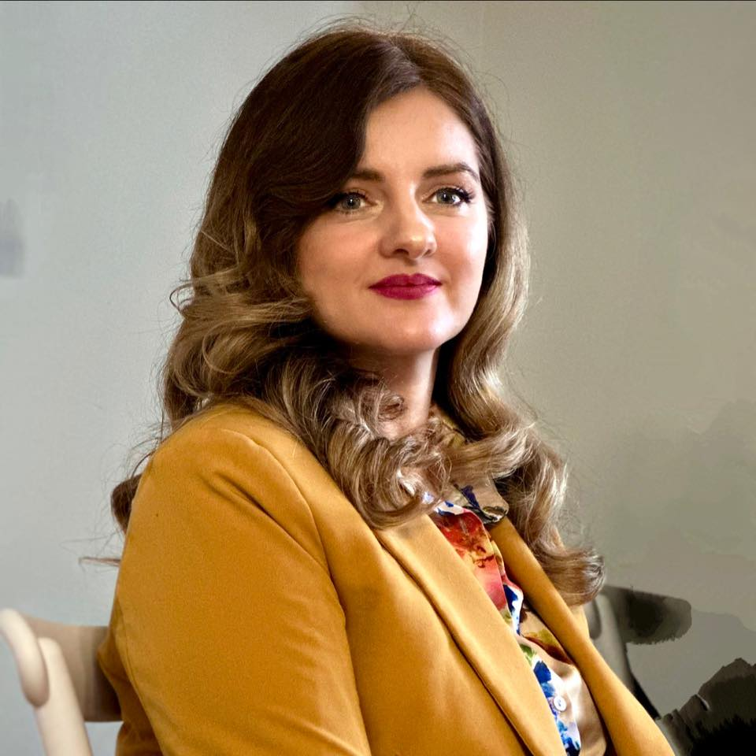

ინდივიდუალური თერაპია
ერთზე ერთ შეხვედრები, სადაც ვმუშაობთ თქვენს პირად სირთულეებზე და ემოციურ მდგომარეობაზე.
ფსიქოლოგი / თერაპევტი
მე გეხმარებით უკეთ გაიგოთ საკუთარი თავი, დაძლიოთ სირთულეები და იპოვოთ შინაგანი ბალანსი ყოველდღიურ ცხოვრებაში.

მაკა გორდელაძე არის პრაქტიკოსი ფსიქოლოგი მრავალწლიანი გამოცდილებით, რომელიც მუშაობს როგორც ინდივიდუალურ, ისე ჯგუფურ ფორმატში.
მისი მიდგომა ეფუძნება ემპათიას, ყურადღებიან მოსმენას და თითოეული ადამიანის ინდივიდუალური საჭიროებების გააზრებას. თერაპიის პროცესში მთავარი მიზანია უსაფრთხო სივრცის შექმნა, სადაც ადამიანს შეუძლია თავისუფლად გამოხატოს საკუთარი ემოციები და იპოვოს საკუთარი გზები სირთულეების დასაძლევად.
თერაპია ჩემთვის არ არის მხოლოდ პრობლემების გადაჭრა — ეს არის გზა საკუთარი თავის უკეთ გასაგებად.
მე მჯერა, რომ თითოეულ ადამიანს აქვს შინაგანი რესურსი ცვლილებისთვის. ჩემი როლია დაგეხმაროთ ამ რესურსის აღმოჩენაში და მხარდაჭერა გაგიწიოთ ამ პროცესში.
მხარდაჭერის სხვადასხვა ფორმატი, რომ თქვენთვის ყველაზე კომფორტული და შედეგიანი გზა აირჩიოთ.
ერთზე ერთ შეხვედრები, სადაც ვმუშაობთ თქვენს პირად სირთულეებზე და ემოციურ მდგომარეობაზე.
სოციალური მხარდაჭერის გარემო, სადაც შეგიძლიათ გაიზიაროთ გამოცდილება და ისწავლოთ სხვებისგან.
დახმარება მშობლებს ბავშვებთან ურთიერთობის გაუმჯობესებაში და სწორი მიდგომების განვითარებაში.
პირველი ნაბიჯი ყოველთვის ყველაზე რთულია — მაგრამ სწორედ ის ქმნის ცვლილებას.